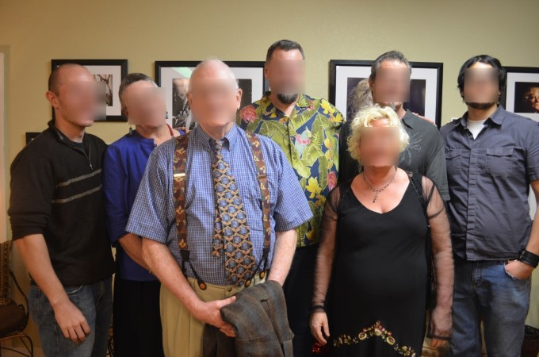

Smart Use Cases & Code Samples
The code samples set are of practical usage, production ready snippets available in various programming languages intended to familiarize the reader with the PixLab API. For an introduction course see Getting Started with PixLab, The PixLab Rest API and The Endpoints Reference Guide. You’re welcome to copy/paste and run these examples to see the API in action.
These examples and dozen of others are available on the PixLab Github Sample Repository.
- Filter image uploads according to their NSFW Score
- Face Recognition (Verify Identity)
- Convert a PDF to a high resolution image
- Generate a description of an image
- Generate GIF form a set of static images
- Image Encryption & Decryption
- Generate Random Pixels
- Scan Passports, Visas or ID Cards
- Scan US Driver's License
- Detect & Blur Human Faces
- Detect & Crop Human Faces
- Mimic Snapchat Filters
- Face Lookup (find person's face)
- Upload a local media file
- GIF Composite
- Age, Gender & Emotion Extraction
- Create a new image and draw something on top
- Extract text from a given image (OCR)
- Smart Media Validation
- Grayscale, Edge & Oil Paint Effects
- Composite two or more images
- Generate Funny MEME
PixLab Code Samples
Blur/Censor images uploads according to their NSFW score
Given an input image or video frame, perform nudity & adult content detection at first and if the NSFW score is high enough, apply a blur filter on the input picture. A typical blurred image should look like the following after processing:

To perform such operation, two endpoints are actually needed. One for the analysis phase, the other for processing:
- NSFW is the analysis endpoint that must be called first. It does perform nudity & adult content detection and returns a score value between 0..1. The more this value approaches 1, the more your picture/frame is highly nsfw. Find out more information about NSFW here.
- BLUR is called later only if the nsfw score value returned earlier is greater than certain threshold. In our case, it is set to 0.5. The blur endpoint is documented here.
PixLab Code Samples
Face Recognition - Verify identify
In this example, we'll verify whether two faces belong to the same person or not. Let's verify these two:
-
FACECOMPARE is the sole endpoint needed to perform such task. It expect a single face to be present in the source and the target image.
If your image contains multiple faces, you can extract the target face via crop using the rectangle coordinates obtained from facedetect or you can simply switch to facelookup instead. Find out more information about facecompare here.
PixLab Code Samples
Convert a PDF document to a high resolution JPEG/PNG image
In this sample, we'll convert a PDF document to a high resolution JPEG or PNG image using a single API endpoint:
PDF invoice converted to a high resolution PNG.
PixLab Code Samples
Image Tagging & Visual Content Extraction
Let's generate a description of an image in human readable language with complete sentences. This imply running a Convolutional neural network on top of the target image and extract content of interest.
Input image.
PixLab Code Samples
Generate GIF form a Set of Static Images
Let's generate a GIF file from a set of static images:
Output GIF
To perform such operation, only one endpoint is actually needed:
-
MAKEGIF is the only processing endpoint needed here and it expect a set of static images which can be of different format plus a bunch of other options and the output is a GIF file where each frame correspond to one entry from the set of the given images. Find out more about makegif here.
-
PixLab ships with others GIF processing endpoints such as cropgif for cropping, gifcomposite to composite stuff on, resizegif for resizing and so forth.
PixLab Code Samples
Image Encryption & Decryption
PixLab Code Samples
Random Pixel Generation
In this sample, we shall dynamically generate a new image of desired height and width, and fill it with random pixels using a mix of standard image processing and soon Machine Learning algorithms. Below, a typical output image generated via this endpoint.
Randomly Generated Image
To perform such operation, only one endpoint is actually needed:
- PIXELGENERATE is the sole endpoint needed for such a task. It expects, a width & height and returns a new image filled with random pixels. This is very useful for generating background (negative) samples for feeding Machine Learning training algorithms for example. Find out more information about this endpoint here.
PixLab Code Samples
Detect & Blur human faces
In this sample, we shall apply a blur filter on all detected human faces in a given image or video frame. A typical output picture after processing should look like the following:
Input Picture

Output (all faces blurred) Picture
To perform such operation, two endpoints are actually needed:
- FACEDETECT is the analysis endpoint that is called first. It outputs the rectangle coordinates for each detected human face in a given image or video frame. You can find out more information about facedetect here.
- MOGRIFY is called later after we obtain the rectangle coordinates for all the detected faces. In which case, we simply pass these coordinates to mogrify untouched and the target regions of the image are blurred. The mogrify endpoint is documented here.
PixLab Code Samples
Detect all human faces present in a given image and extract each one of them
In this sample, we'll perform human face detection using the FACEDETECT endpoint, and finally extract each detected face via CROP.
Input Picture

After Crop

To perform such operation, two endpoints are actually needed: One for the analysis phase, the other for processing:
- FACEDETECT is the analysis endpoint that must be called first. It outputs the rectangle coordinates for each detected face in a given image or video frame. This endpoint, its expected parameter, and JSON output result is documented here.
- CROP is called later after we obtain the rectangle coordinates for all the detected faces. In which case, we simply pass these coordinates to crop untouched and the target region of the image where each face is located is extracted. Find out more information about the CROP endpoint here.
- Alternatively, if you prefer marking the face(s) instead of extracting it, you can rely on the DRAWRECTANGLE endpoint to perform such task.
PixLab Code Samples
Mimic Snapachat Filters
In this sample, we shall mimic the famous Snapchat filters on a set of human faces. Actually, producing those filters is quite easy and require only three API endpoints: facelandmarks, smartresize & merge plus a bunch of other optional endpoints for cool background effects if desired.
1957 Elia Kazan film “A Face in the Crowd.†Photo courtesy of Warner Bros.
To perform such operation, two endpoints are actually needed: One for the analysis phase, the other for processing:
- FACELANDMARKS is the analysis endpoint that must be called first. It tries to detect all present human faces, extract their coordinates and more importantly, it output the landmarks for each face. That is, the coordinates for each facial member such as the eye, bone, nose, mouth, chin, lip, etc. We'll use these coordinates later to composite stuff such as the famous flower crown, dog members, etc. on top of the desired facial region. Find out more information about facelandmarks here.
- SMARTRESIZE is called in order to fit the image to be composited (i.e. The flower crown) to the desired dimension such as the bone width.
- MERGE is the processing endpoint we call next. It expect a series of coordinates (X, Y) and a list of images to be composited on top of the target image. More about merge here.
- You may have noticed that PixLab ships with dozen of filters such as grayscale, noise, blur, chop, despeckle, deskew, edge, emboss, rotate, flip, etc. Don't forget to use one of them for some cool background effects if desired.
PixLab Code Samples
Face Lookup - Facial Shape Based Search
In this example, we'll perform a search operation for a person based on its facial shape. That is, given a human face, try to find it in a crowd. This involves iterating all over the detected faces in the crowd and performing face to face comparison.

- FACELOOKUP is the sole endpoint needed for such operation. It expects two images: one holding the target face to search for and the other, the people crowd for the lookup operation. When done, a bounding box and a confidence threshold are returned that you can use to evaluate the search operation and extract the best candidate. Find out more about the facelookup API endpoint here.
PixLab Code Samples
Upload a Local Media File
-
Most Analysis & Processing endpoints let you upload a media file to be analyzed or processed directly by sending a multipart/form-data POST request. Nevertheless, very few endpoints such as OCR, MOGRIFY, FACECOMPARE, etc. require that the target file be remotely available before processing. In such case, STORE is of particular help.
-
The STORE endpoint let you upload a local file whether video or image to the remote pixlab.xyz storage server or your own S3 bucket depending on the configuration from your dashboard. After that, you can use the output link for other purposes such as processing via MOGRIFY, DRAWRECTANGLES, etc. or simply serving content. Find out more information about the store endpoint here.
PixLab Code Samples
Composite a static image on top of a GIF
- GIFCOMPOSITE let you superpose any static image on top of a GIF at the desired frame. It is used to mimic the behavior of MEME and MERGE. Two endpoints designed to work with static images. Find out more about gifcomposite here.
PixLab Code Samples
Age, Gender and Emotion Patten Extraction
In this sample, we'll guess the age, gender and emotion pattern by just looking at the facial shape of any present human face in a given picture or video frame using state-of-the-art machine vision models.

facemotion typical output
-
FACEMOTION is the sole endpoint needed to perform such a task. It should output the rectangle coordinates for each detected human face that you can pass verbatim if desired to other processing endpoints like crop or mogrify plus the age, gender and emotion pattern of the target face based
on its facial shape.
Find out more information about facemotion here.
PixLab Code Samples
Dynamically create a new image & draw some text on top
In this example, we'll dynamically create a 300x300 pixels, PNG image with a yellow background and draw some text on top. This is very useful, if you want for example to challenge bots on your platform by implementing a minimalistic yet powerful Captcha-like challenge. A typical generated image should look like the following after processing:
- A blank image is requested first via call to NEWIMAGE which export to PNG by default but you can change the output format at request. We set the image height, width and the background color respectively to 300x300 with a yellow background color.
- Note, if one of the height or width parameter is missing (but not both), then the available length is applied to the missing side and if you want a transparent image set the color parameter to none.
- We finally DRAW our text at the center of the newly created image using the WOLF Font, black color and 35 px font size. One could also draw lines, a rectangle, and other shapes for example to surround faces, merge with other images and so on...
PixLab Code Samples
OCR - Extract text content from a given image
Given an input image or video frame with human readable characters. Detect input language & extract text content from there. OCR stand for Optical Character Recognition and PixLab uses state-of-the-art machine learning algorithms, so expect very good results given a good quality image.
Typical Input Picture
PixLab Code Samples
Smart Image Resize
In case you need to check the width & height or format (eg. PNG or JPEG) of an uploaded image for example and dynamically resize/convert that image to the required dimension or format. Two endpoints are needed: One for the analysis phase, the other for processing...
- HEADER is the command to invoke first. It should return most of the metadata associated with this image. This includes width, height, color channels, size, MIME type, etc. You can use these information to validate or reject an uploaded image based on your criteria. You can read more about header here.
- SMARTRESIZE, AVATAR, THUMBNAIL, CONVERT etc. are the processing commands that you can invoke later to change the dimension of the target image or even convert to different format to feet your needs.
PixLab Code Samples
Cool Filters Effect
With over 130 API Endpoints, PixLab ships with dozens of filters without a lot of tedious programming effort on your side. All you need to do is call the target filter endpoint with some parameters if any and the desired effect is obtained immediately like the following:
PixLab Code Samples
Composite two or more images on top of another
- Let's merge few small images on top of a big one. This operation is done via the MERGE endpoint which accept as much images as desired.
- A more sophisticated approach is to capture the facial landmarks coordinates via FACELANDMARKS and composite something such as dog facial parts, glasses, Batman mask, etc. on the target facial region to mimic the famous Snapchat filters for example.
PixLab Code Samples
Generate Funny MEME
In this sample, we'll programmatically generate a funny MEME by drawing some funny text on top of the famous Cool Cat. Given an input image, output the following:
Input Picture

Output Picture

- DRAWTEXT is the sole endpoint needed to generate such image. It expect the text to be displayed on TOP, CENTER or BOTTOM of the target image. This endpoint is so flexible that you can supply Font Name, Size & Color, Stroke width, etc. Refer to DRAWTEXT documentation for additional information. Notice that there is a more flexible endpoint named DRAWTEXTAT which let you draw text on any region of the target image by specifying the X & Y coordinates instead.